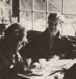

As we've noted several times in these pages, Helen and Scott Nearing are light years ahead of most of us when it comes to getting back to the land and living a life of voluntary simplicity. As well they should be, since they originally homesteaded a run-down farm in Vermont's Green Mountains away back in the autumn of 1932.
Life was good for the Nearings on that mini-farm . . . until the slopes around them exploded into ski resorts in the early 50's, forcing Helen and Scott to move on to a rocky inlet on the coast of Maine and start all over again.
And that's where you'll find the Nearings today: still clearing brush, still building honest stone houses (Helen and Scott are famous for their stone houses/, and still raising most of their vegetarian diet themselves in unbelievably productive wholistic gardens . . . just as they've been doing for nearly 50 years.
Naturally tin more ways than one/, the Nearings have learned a few things about homesteading and getting back to basics over the years. And, lucky for all of us, they've agreed to share some of that knowledge with MOTHER's readers in a regular question and answer column. If you'd like to get in on the action, send your question or questions about self-sufficient living on the land to Helen and Scott Nearing, THE Mother Earth News P.O. Box 70, Hendersonville, N.C. 28739. And please don't expect personal replies to your queries. The most important and most frequently asked questions will be answered here-and here only-where we all can read what the Nearings have to say.
Would you please tell me what you use to wash your hair, and whether you know of any herbs that will serve that purpose? Also, have you ever had trouble with hard well water, and if so-what was your solution?
We use liquid green soap (a vegetable tincture sold in any drugstore) as our shampoo, and we sometimes use chamomile in the rinse. Fortunately, the water from the springs on our property in both Vermont and Maine has been soft, so we've never had to deal with hard water.
My parents know of my desire to live on my own homestead someday . . . and my mother says that-if I'm to succeed in my goal-I'll have to learn how to sew. I can see that stitchery could be a useful skill, but the fact is . . . I hate sewing! Do you-along with all your other chores also make your own clothes?
I (Helen) also dislike sewing and do only necessary patching and darning. Scott, incidentally, is a good darner and tackles heavy winter socks while I read to him. We find that shopping in rummage sales and thrift shops helps to solve the problem of clothing the family easily and economically.
Last year, for example, we were giving a talk in Portland . . . on the simple life and how we get along on sparse spending compared to most of our fellow Americans. A man stood up during the question period and said, "I'm in the coat and dress business, and that suit you have on costs at least $150. How do you explain that extravagance when you're supposed to live a simple life?"
He sat down amid gasps from the audience. I smiled and said, "Gee, I'm glad to hear you say that. I got it last week at a rummage sale ... for $3.00."
I understand that you use wood to heat your house. Are there, then, any woodburning stoves that you like better than others?
We've used old (and far-from-airtight) schoolhouse stoves 3n both Vermont and Maine. In our present pine-paneled, stone-floored living room, we have a large Franklin model that we open up and enjoy as a fireplace in the summer. However, the heater can keep only one room comfortable during the cold Maine winter.
From October to May, we warm our whole house with a remarkable barrel-shaped woodburner, which we install in our living room in front of the Franklin. It's called the FreeFlow stove and was invented by a friend of ours, Eric Darnell of South Strafford, Vermont.
Eric's design is based on the proven principle that warm air rises. Steel tubes (our stove has ten, but there can be more or less) are welded together around the body of the heater. Cold air is then sucked off the floor and is warmed by the fire .. . warm air pours out into the room. We use two-foot logs and control the temperature with one front sir inlet. The Free Flow radiates heat like anything! Just ask our cat, which basks by it with delight . . . or ask Helen, who says she'd rather sell her violin than part with our Free Flow stove
I A friend of mine wrote to me about his experiences with fasting on a diet of fresh lemon juice mixed with maple syrup and red pepper. Have you ever heard about or tried a fasting diet . . . and, if so, could you print a recipe?
A mixture of lemon juice, maple syrup, and red pepper sounds horren dous and unhealthful . . . as well as unpalatable. On top of that, there's no such thing as a "fasting diet". A fast is the voluntary act of going entirely without food for a stated time, while a diet specifies particular foods-or food quantities -for a certain period.
Yes, we have fasted-on water only for 10 days at a time when we felt the need. It's a salutary, restorative, and memorable experience. We also go on mini-fasts (just juices) every Sunday and on those days when other people feast (Christmas, New Year's Day, and Thanksgiving). We do so partly to protest the national gluttony . . . partly in solidarity with the starving people on earth . . . and partly as a rest for the body (and for the cook).
I admire the planning that goes into your activities, and the obvious spirit of loving cooperation with which you pursue your goals . . . but I wonder how you cope with adversity. Has either of you ever experienced deep personal bereavement? The loss by fire of my home, wife, and two children prompts me to ask your thoughts on such tragic and traumatic events.
We've both had losses and known sorrow, but we've not permitted them to dominate the positive aspects of our lives.
When some untoward event has overtaken us such as the death or alienation of our nearest and dearest-we try to center our attention, first, on the basic purposes of life (and death) . . . and then on the lessons to be learned from the particular tragedy. We believe everything that happens to us includes opportunities for self-education. Therefore, we try to make our lives affirmative rather than negative, for-in its totality-life is an affirmation.
In his book, Your Engineered House, Rex Roberts extols the benefits of aluminum sheet roofing . .. but also warns that thermal expansion and contraction may loosen the material's fastenings and cause leaks. Have you had any experience with aluminum sheet, and if so, how did you solve the problem Roberts mentions?
We used corrugated, galvanized iron for the roofs of our Vermont buildings while we could still get it. Today, that material has been replaced by double crimp sheet aluminum, which we use on our present home in Maine. In one of our barn/garages-where we had aluminum atop a single-board roof-the wind and frost did tend to pull the roofing nails loose. In buildings with a double-board roof under the aluminum, however, we've had no trouble with either loose fastenings or leaks.
Have you had any experience with French intensive gardening? If so, do you think it's worth the extra effort?
We've used the French intensive method in certain sections of our garden for many years. We're convinced that it economizes on space, produces beds that are easy to work, limits weed growth (because of the tightness of planting), conserves moisture, and looks attractive. Yes, it's worth the extra effort.
|
 |
|
|